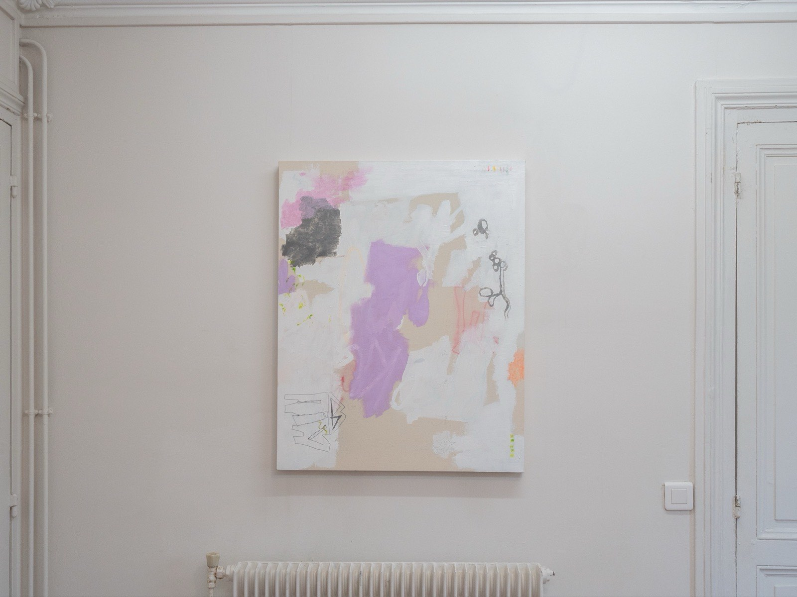
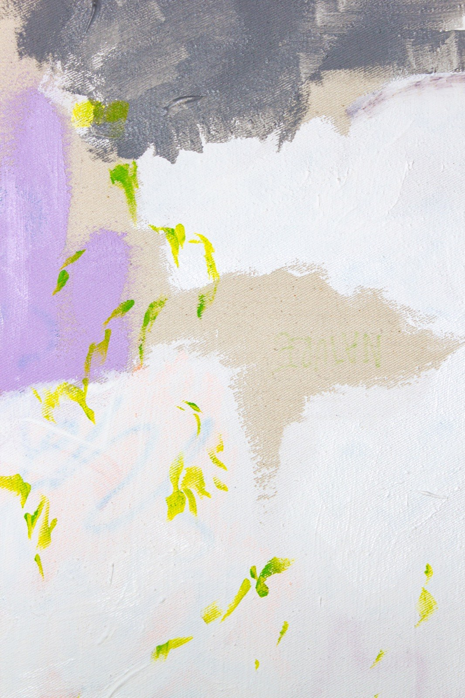
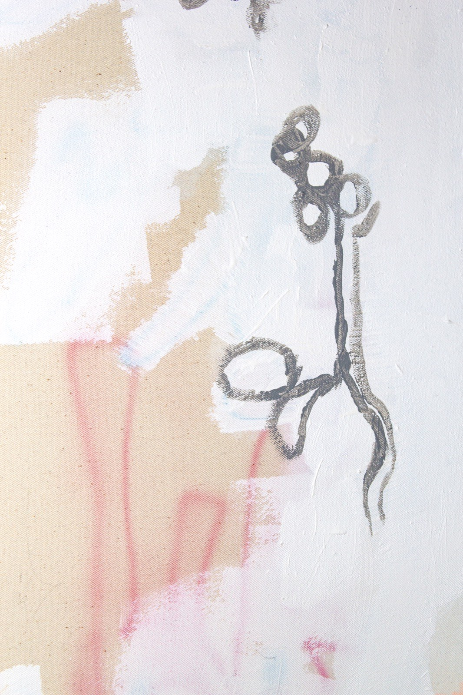
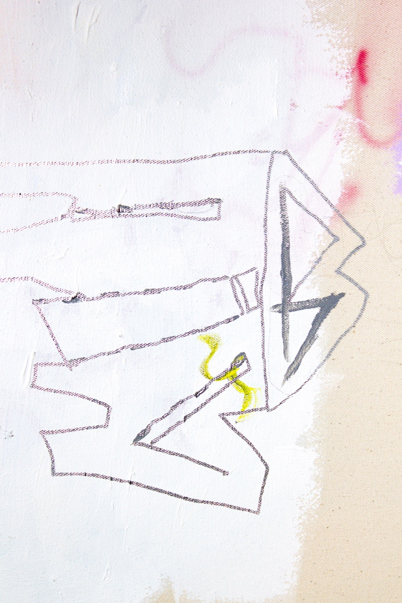
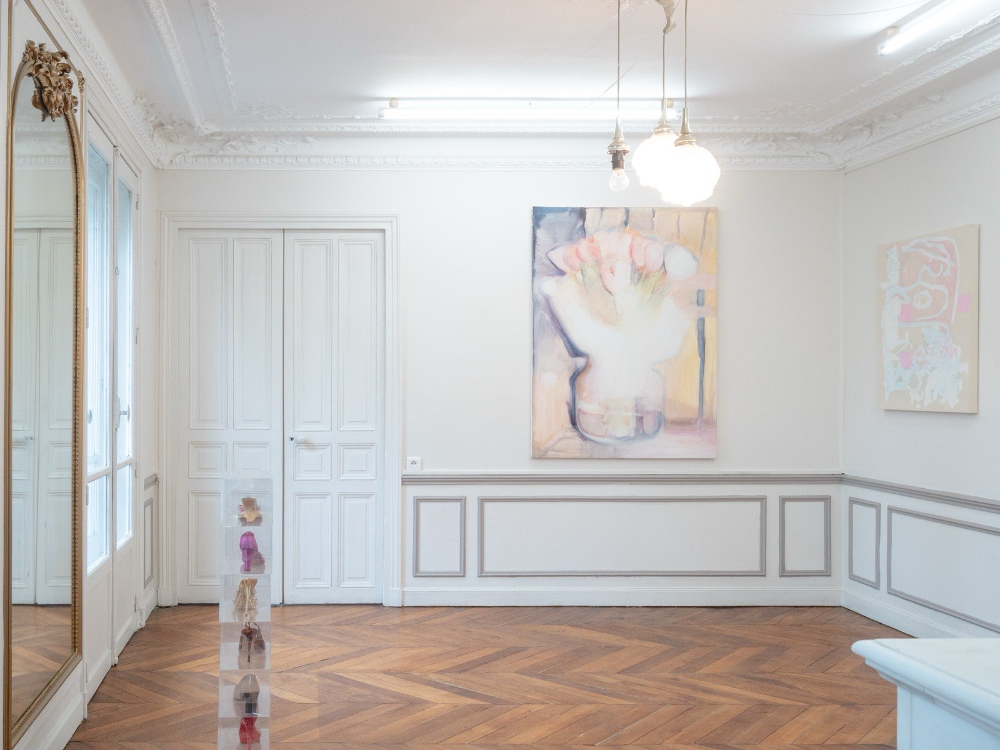
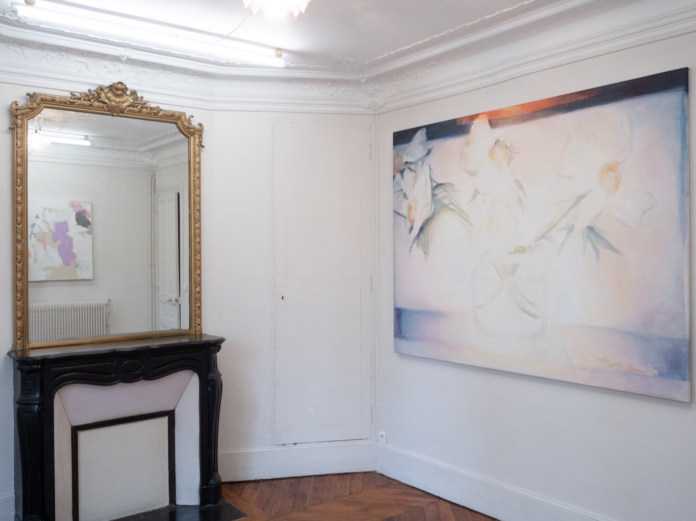
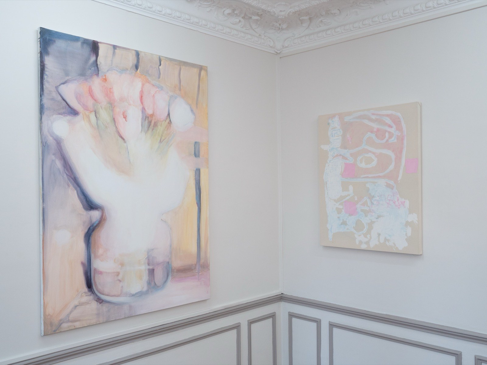
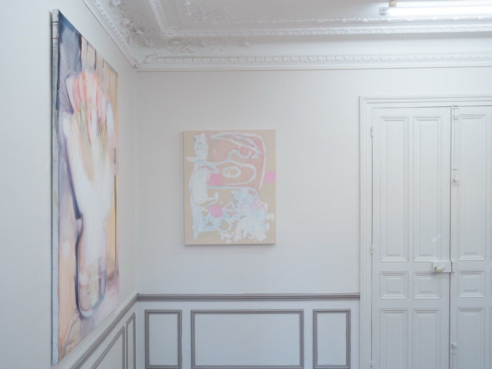
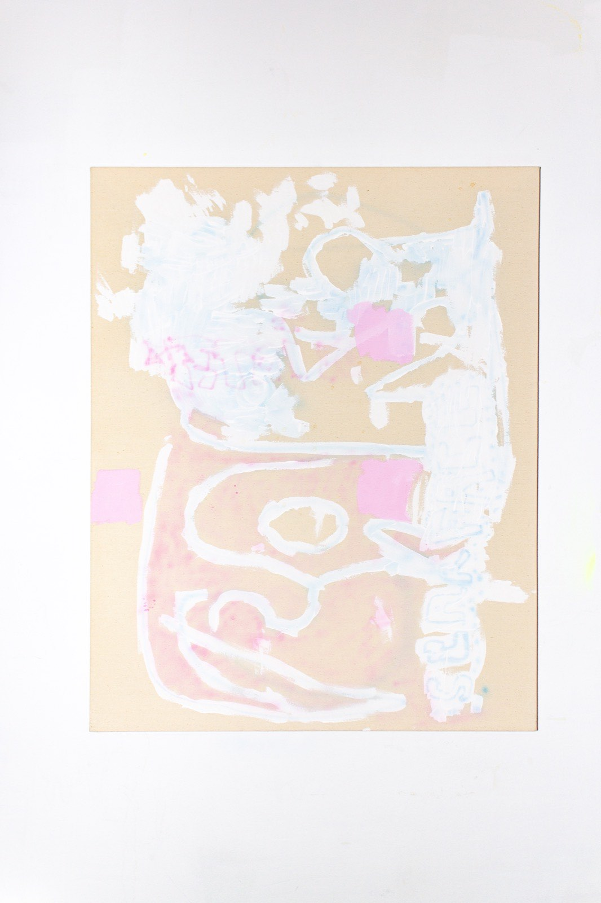
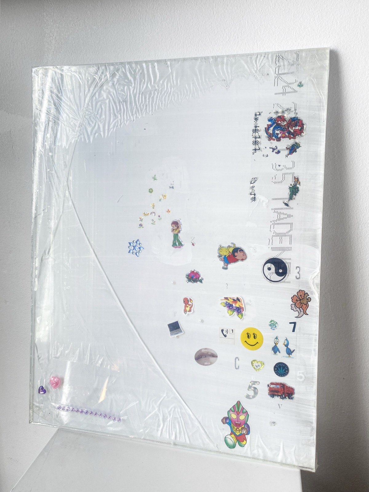

Caroline Ventura
Entrée 003 · Magenta Made Me Hardcore
Œuvres — 3 entrées

Caroline Ventura, Sans titre (air), 2026. Peinture — châssis bois hêtre, toile coton, mixed medium, 92 × 73 cm. Courtoisie de l'artiste. Photo : Caroline Ventura.

Caroline Ventura, Sans titre (air) (détail), 2026. Peinture — châssis bois hêtre, toile coton, mixed medium, 92 × 73 cm. Courtoisie de l'artiste. Photo : Caroline Ventura.

Caroline Ventura, Sans titre (air) (détail), 2026. Peinture — châssis bois hêtre, toile coton, mixed medium, 92 × 73 cm. Courtoisie de l'artiste. Photo : Caroline Ventura.

Caroline Ventura, Sans titre (air) (détail), 2026. Peinture — châssis bois hêtre, toile coton, mixed medium, 92 × 73 cm. Courtoisie de l'artiste. Photo : Caroline Ventura.
Demander la fiche →
«Magenta Made Me Hardcore», vue d'installation, KRAMER, Paris, 2026. Photo : Kramer.

«Magenta Made Me Hardcore», vue d'installation, KRAMER, Paris, 2026. Photo : Kramer.

«Magenta Made Me Hardcore», vue d'installation, KRAMER, Paris, 2026. Photo : Kramer.

«Magenta Made Me Hardcore», vue d'installation, KRAMER, Paris, 2026. Photo : Kramer.

Caroline Ventura, Sans titre (étoile), 2026. Peinture — châssis bois hêtre, toile coton, mixed medium, 92 × 73 cm. Courtoisie de l'artiste. Photo : Caroline Ventura.
Demander la fiche →
Caroline Ventura, Stickers (2026), 2026. Peinture — plexiglass, gesso, autocollants, scotch, 33 × 24 cm. Courtoisie de l'artiste. Photo : Caroline Ventura.
Demander la fiche →